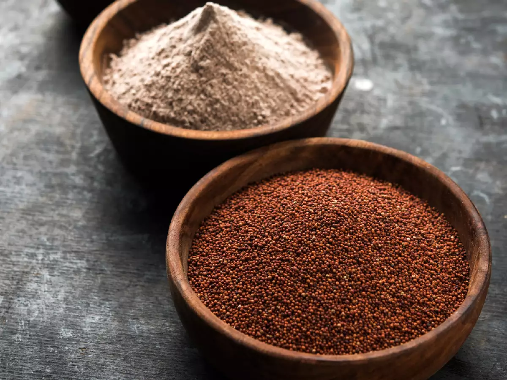

- Desi Ghee
- Indian Gooseberry
- Haldi
- Ragi 
- Moringa
- Makhana
- Jackfruit
Ghee has been used in India for centuries. Of late, however, the rest of the world is following suit and applauding desi ghee for its magnificent properties. Ghee may be high in fat but recent lab studies have shown that daily consumption of ghee (in adequate quantities) can help reduce blood cholesterol. It is also rich in antioxidants and acts as an aid for the absorption of vitamins and minerals from other foods, thereby boosting digestive health. As a rich source of butyric acid, ghee also helps in lowering inflammation and boosts immunity.
Indian gooseberry, or amla, is a rich source of natural vitamin C, with a concentration of 600 mg to 1800 mg of ascorbic acid in every 100 g. Fresh amla juice contains 20 times as much vitamin C as is present in orange juice. Heating or drying of fresh fruits or vegetables can cause the loss of most of the vitamin C present originally. However, amla is an exception as it contains substances that partially protect the vitamin from being destroyed during heating or drying.
Haldi, or Turmeric, is used in Indian cuisine to spice up dals and curries. But did you know that besides being a key ingredient in cooking, turmeric has also a special place in Indian medicine? Curcumin, the active component in turmeric, is credited for its numerous health benefits. It is known to help with inflammatory disorders, irritable bowel syndrome, ulcerative colitis as well as for eye and skin conditions and neurological disorders. Turmeric is a natural antiseptic and anti-bacterial agent that can be used to fight infections. In fact, a very effective remedy for the common cold is to mix a pinch of turmeric powder in a glass of warm milk and have it before going to bed.
Ragi, also known as Finger millet is a super grain. It contains all 3 parts of kernel namely bran, germ, and endosperm which are extremely beneficial for health. This cereal is gluten free so it is highly preferred by gluten and lactose intolerant people. Rich in Vitamin D and iron, Ragi regulates the blood sugar levels and also helps in reducing the risk of stroke. It is a natural relaxant and helps in reducing weight as well.
Moringa(Drumstick) is an incredible nutrient-dense superfood! It has seven times the amount of vitamin C in oranges, four times as much calcium and double the amount of protein in milk, four times the vitamin A in carrots, and three times the potassium in bananas! In fact, moringa tree leaves registered a higher ORAC (Oxygen Radical Absorbance Capacity) score (157,000!) than most anitoxidant superfoods that are traditionally talked about, including Acai berries, green tea, blueberries, dark chocolate, garlic, goji berries, pomegranates and red wine! In places where no one can afford fancy pharmaceuticals, moringa trees keep people healthy. One nickname for it is “vitamin tree” – with good reason! It is not uncommon to see people reaching up and pulling the young leaves off moringa tress and chewing on them. Getting a fresh burst of vitamins and nutrients in the single handful.
Makhanas are a popular snack which becomes more popular during fasts. Puffed up like cotton balls, lotus seed or makhana possess several health benefits. They are low in fat, high in protein, iron, magnesium, possession, and zinc. Makhanas are also believed to heal the stressed mind and help in curing insomnia. This superfood from India also contributes to improving urination and possesses anti-aging properties.
Jackfruit, which is packed with many minerals and vitamins, is one of a kind. It is a rich source of carbohydrate, vitamins, protein, fiber, electrolytes, and phytonutrients. It is a rich source of simple sugar ( fructose and sucrose) which provides instant energy. Jackfruit is also rich in dietary fats which helps in improved digestion and prevents constipation. Not only this, it has high anti-toxicant content. This superfood is scaling the health food popularity chart these days as it helps in reducing weight and cholesterol, beat diabetes and also prevent colon cancer.